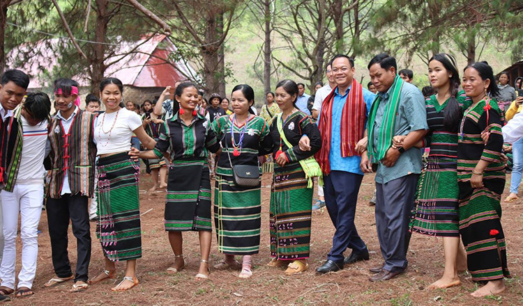

Learn about the living traditions, community life and cultural heritage of Ratanakiri, with respect for the people who carry them forward.
Ratanakiri is home to diverse communities, including Kreung, Tampuan, Jarai, Brao and Kavet people. Each community has its own histories and identities. Traditions and everyday life vary between communities, villages, families and generations; this page is only an introduction.
Learn about Indigenous communitiesTampuan people are among the Indigenous communities of Ratanakiri. Community knowledge and stewardship are part of the province's living heritage.
Kreung communities are part of Ratanakiri's highland history and contemporary life. Practices and customs are not identical in every village.
Jarai people have distinct community identities and traditions. Ask locally before entering community or ceremonial spaces.
Brao and Kavet people are among the communities that contribute to Ratanakiri's cultural diversity. Do not assume that one person's account represents everyone.
House forms and materials differ across communities and households. The photograph here is from the local collection; it is not attributed to a specific Indigenous group.
Building styles and materials differ between households. This image is not attributed to a specific community.

Clothing and adornment are personal and culturally meaningful. Styles and their significance vary; ask people how they want their clothing represented rather than assigning an identity from appearance.
Textile skills and clothing traditions vary between communities and makers. Ask local artisans how they describe their work and whether it may be photographed.

Music has a place in cultural gatherings and community life. Instruments and practices differ, and not every gathering is open to visitors.
Festivals and ceremonies are community-led and may be private or restricted. Follow local guidance and do not treat sacred practices as performances.
Handicrafts reflect makers' skills and choices. Ask about an item's meaning and buy directly from makers or community-led initiatives when invited.
Handicrafts reflect the skills and choices of their makers. Ask about an item's use and meaning, and buy directly from makers or community-led initiatives when invited.

A guide from or connected to the community can properly introduce you and translate.
Always ask a person, and a village elder for ceremonies, before taking photos.
Choose homestays, guides and handicraft centres run by the community itself.
These are living communities with their own lives, not a display for visitors.